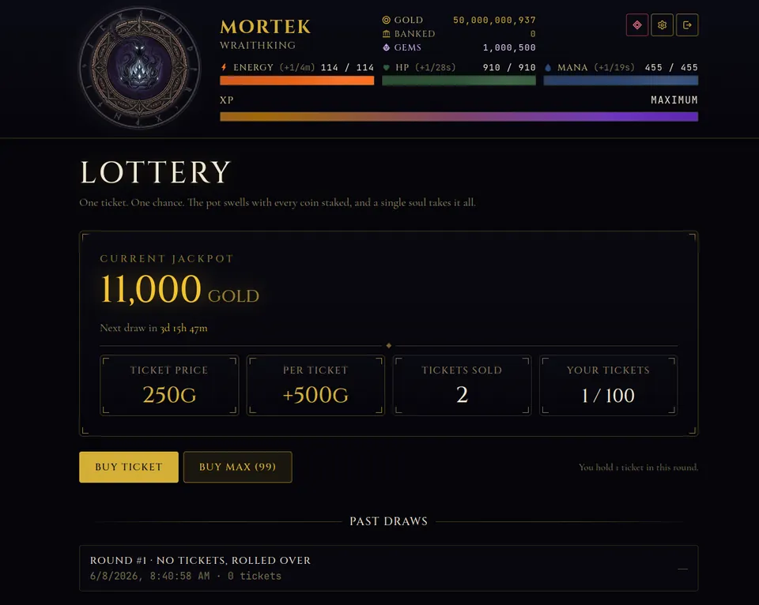

Shadowrealm has a gambling side, and how in-game gambling works in Shadowrealm: Age of Darkness is not obvious from the menus. There are casinos in every city, a weekly lottery, and the surprising fact that players can own the tables. Everything here is played with in-game gold, never real money. This guide explains each piece, what the odds mean for you, and when to leave the table.
Casinos: eight games in every city
Every city runs a full slate of casino games: Dice, Blackjack, the Wheel of Fate, the Fight Pit, Roulette, Slots, Plinko and a dedicated Poker room. Each game exists as its own table per city. Prices and betting limits climb steeply from city to city, so Ashenvale is the modest option and The Dark Citadel is the high-stakes one. If you are still learning the cities, our overview of Shadowrealm lists them.
Roulette, the easiest table to learn
Roulette is a good example of how the games are built. The screen shows a wheel, a classic betting grid with a single zero, and a row of chips. You pick a chip size, click the grid to place bets, and press Spin.

- Inside bets are single numbers from 0 to 36.
- Outside bets are the three dozens, the three columns, red or black, odd or even, and 1 to 18 or 19 to 36.
- Controls include Undo, Clear and Double Bet, and you can place up to 50 bets on a single spin.
- Max bet is shown on the table. Chips above that limit are greyed out, which you can see on the right of the chip row.
The table has a single zero, which is where the house edge comes from. Outside bets win more often but pay less, inside bets win rarely and pay a lot. None of this changes the long-run result, which is that the house comes out ahead.
The twist: players own the tables
Every table except Poker can be bought outright by a player. The owner then banks the house edge on every bet other players place there. Casino ownership has a rank requirement per city: rank 2 for Ashenvale, rank 4 for Shadowmere, rank 6 for Duskholm and rank 8 for The Dark Citadel. When you buy a casino, a part of the price is kept as a non-refundable house fee, and the rest goes into the casino's bank.
That makes the casinos a real part of the economy. A gold sink for the gambler is income for the owner, and the owner is another player. It is a fun long-term goal once you have spare gold, and it pairs well with the plans in the progression guide.
The lottery
The lottery is the simplest bet in the game: buy a ticket, wait for the draw, and one soul takes the whole pot. The draw happens weekly. The jackpot is a base amount plus a contribution from every ticket sold, so it grows as the week goes on. If a round ends with no tickets, the jackpot rolls over into the next one. A small tax is taken from the winner's payout as a gold sink, and each player is capped on how many tickets they can hold per round.

In the screenshot the jackpot was small and only two tickets had been sold, which tells you something useful: when few people play, your odds per ticket are much better. A quiet round with a small pot can be a better bet than a famous one.
Why gambling exists in the game
As a developer, I see gambling as part of the economy rather than a separate minigame. Players earn a lot of gold over time, and gold needs places to go: gear, crafting materials from the Reliquary, stronghold top-ups, and tables. The lottery tax and the casino house fee on purchases act as gold sinks, which keeps the economy from simply inflating. For players with spare gold they are also a way to take a risk with a clear price attached, and for owners they are a slow, steady income. If gambling is not your thing, you can ignore it completely and still reach every rank.
A sensible way to gamble
- Set a budget. Only gamble gold that is not earmarked for gear, crafting or stronghold purchases.
- Know the house edge. Over time every table takes a little, and owners earn it.
- Prefer small bets at your city's table. You can always move up when your gold grows.
- Use the lottery as a lottery. Treat tickets as a small weekly gamble, not a plan.
- Do not chase losses. Gold you lose at the table could have bought a Reliquary material or a better item.
The casino is a luxury, not a strategy. Earn first, gamble with the surplus.
How it fits with the rest of the game
Gambling is a side activity, and it works best when your energy is already spent and your stronghold is already building. Your income still comes from actions, and if you want more of it, read the beginner tips. If you prefer risk that pays in loot and XP instead, the crime guide covers the stables and the jail.
Try it
Create a character, work your way to rank 2, and visit the Ashenvale tables with a small bet. Play free at playshadowrealm.com.
Frequently Asked Questions
Is gambling in Shadowrealm real money?
No. Casino games and the lottery are played with in-game gold. Shadowgems are a separate optional currency for the Gem Shop, sold as one-time purchases, and nothing here pays out real money.
Can players own casinos in Shadowrealm?
Yes. Every table except Poker can be bought by a player, who then banks the house edge on bets placed there. Ownership needs rank 2 in Ashenvale, 4 in Shadowmere, 6 in Duskholm or 8 in The Dark Citadel.
How does the Shadowrealm lottery work?
The draw is weekly. The jackpot is a base amount plus a contribution from every ticket sold, one player wins it all, and an empty round rolls the jackpot over. A small tax is taken from the payout.